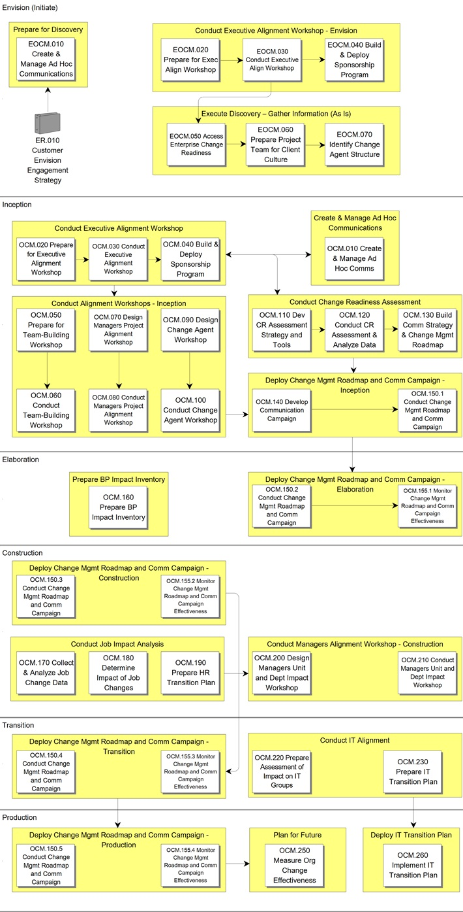

OUM |
Process Overview |
||
Method Navigation |
Current Page Navigation |
||
|
|
||||||||
In OUM, the Organizational Change Management process spans both the Envision and Implement focus areas. In Envision, these tasks are designated with an EOCM ID. In Implement, an OCM ID is used.In Envision, this process focuses on enterprise-level issues that can provide a head start for conducting Organizational Change Management for future implementation projects. The Implement Organizational Change Management process focuses on the entire implementation lifecycle.
The Organizational Change Management process starts at the strategic level with executives and then identifies the particular human and organizational challenges of the technology implementation in order to design a systematic, time-sensitive, and cost-effective approach to lowering risk that is tailored to each organization’s specific needs. In addition to increasing user adoption rates, carefully planning for and managing change in this way allows organization’s to maintain productivity throughout potentially difficult technological transitions. Furthermore, it enables the organization to more easily meet deadlines, realize business objectives, and maximize return on investment.
In OUM, Organizational Change Management begins at the enterprise level during an Envision project, where many projects across the IT Portfolio are being examined and planned. There are enterprise stakeholders that need to be identified prior to implementation project start-up. By beginning at the enterprise level, and then continuing on through each Implementation project, Organizational Change Management supports the organizational move to utilize the new technology, and solutions that are put in place to support the business of the enterprise.
The Organizational Change Management process increases the probability that the technology implementation will be successful, first by getting executive commitment and anticipating the human and organizational challenges and then by creating a strategy that is aligned with the organization’s culture to help managers and users accept the new or updated technology. The Organizational Change Management process helps better manage the "soft side" of the implementation by:
The Organizational Change Management process helps to decrease transition time, meet deadlines, meet business objectives and stay within project timeframes.
The combined process flow Envision and Implement for this process follows:

The Organizational Change Management process in Envision focuses on enterprise-level issues that can provide a head start for conducting Organizational Change Management for an implementation project.
The tasks and work product s for this process are as follows:
| ID | Task | Work Product |
|---|---|---|
Envision |
||
Initiate Phase |
||
EOCM.010 |
Create and Manage Ad Hoc Communications | Ad Hoc Communications |
EOCM.020 |
Prepare for Executive Alignment Workshop | Executive Alignment Workshop Materials |
EOCM.030 |
Conduct Executive Alignment Workshop | Executive Business Objectives and Governance Rules |
EOCM.040 |
Build and Deploy Sponsorship Program | Sponsorship Program |
EOCM.050 |
Assess Enterprise Change Readiness | Preliminary Enterprise Change Readiness Assessment |
EOCM.060 |
Prepare Project Team for Enterprise Culture | Prepared Project Team |
EOCM.070 |
Identify Change Agent Structure | Change Agent Structure |
The objectives of the Organizational Change Management process are:
Refer to Key Work Products for a complete list of key work products in OUM.
The following roles are required to perform the tasks within this process:
| Role ID | Name | Responsibility |
|---|---|---|
Implementing Organization |
||
| BA | Business Analyst | Assist with Job Impact Analysis activity. |
| CMS | Change Management Specialist | The change management specialist provides the customer with experience with leading practices in the human and organizational facets of change management. Change management specialists support the Organizational Change Management (OCM) process by identifying and mitigating risks, generating change momentum, fostering effective communication, and supporting end-user acceptance. The change management specialist works directly with executives to gain their commitment and put in place a project governance model. |
| PM | Project Manager | Participate in definition and maintenance of an optimal project environment. Support events to help the project team function as a high performance team. Collaborate with the change management specialist to make sure that change management and project management activities and expectations are aligned. |
| TS | Training Specialist | Assist with Job Impact Analysis activity. Assist with Training Needs Analysis. |
Customer (User) |
||
| CAT | Customer Assessment Team | Gather and analyze assessment data. |
| CIO | Customer Chief Information Officer | Provide input for IT Alignment activities. |
| CCML | Customer Change Management Lead | Assist with the Change Agent Workshop. Assist with gathering and analyzing assessment data. |
| CCS | Customer Communication Specialist | Work with the Change Management Communication Specialist on all communication tasks. |
| CE | Customer Executive | Participate in Executive Alignment Workshop. Participate in change and communication events. |
| CFS | Customer Functional Specialist | Provide functional expertise. |
| CHRS | Customer HR Specialist | Work with the Change Management Organizational Development Specialist and Change Management Human Performance Specialist on Job Impact Analysis and IT Alignment activities. |
| CITD | Customer IT Director | Assist with IT Alignment activities. |
| CPM | Customer Project Manager | Participate in definition and maintenance of an optimal project environment. Support events to help the project team function as a high performance team. Collaborate with the change management specialist to make sure that change management and project management activities and expectations are aligned. |
| CPS | Customer Project Sponsor | Communicate publicly and privately on change initiatives. Provide resources for change management activities. Remove barriers identified by the change management team. Serve as a role model. Make decisions or see to it that they get made to assist in the change management work products. Build coalitions. Manage risks. |
The critical success factors of this process are:

Copyright © 2006, 2016, Oracle and/or its affiliates. All rights reserved.